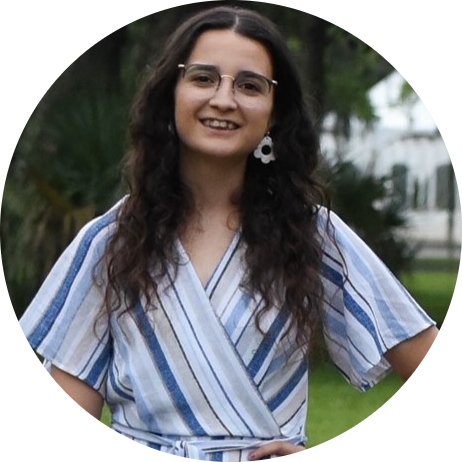

|  | Gisel RodriguezComputer Science Student Computer Science student eager to utilize my relevant experiences and technical skills and continue to learn one bit at a time. I am currently a senior at Florida State University pursuing a B.A in Computer Science and a minor in Communications. My goal is to pursue a software engineer career after graduation. Some of my areas of interest include artificial intelligence, web development, mobile development, and game development. Contact Me |